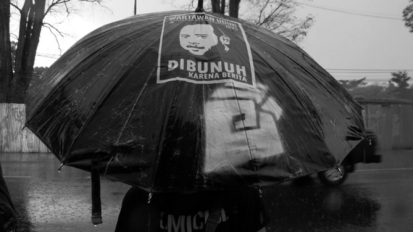

PROFIL AKSI KAMISAN BANDUNG: Sewindu Merawat Ingatan
Sudah berumur delapan tahun, Aksi Kamisan Bandung secara konsisten menyuarakan isu-isu HAM. Juga persoalan lokal, mulai dari penggusuran lahan hingga nasib buruh.
Aksi Kamisan Bandung baru saja memperingati hari jadinya yang ke-8 pada Minggu (18/7/2021) lalu. Sudah lebih dari 350 aksi dilakukan. Sudah sekian banyak isu terkait pelanggaran hak asasi manusia (HAM), korupsi, atau juga pengekangan kebebasan berpendapat disuarakan dalam diam.
Gerakan berupa aksi damai ini biasa dilangsungkan setiap Kamis sore di halaman depan Gedung Sate, Bandung. Salah satu pelopornya adalah Wanggi Hoed, seniman pantomim kelahiran Palimanan, Cirebon yang berkuliah lalu berkarier di Kota Kembang.
Ide menggelar Aksi Kamisan di Bandung muncul setelah Wanggi menemukan informasi tentang Aksi Kamisan di depan Istana Negara, Jakarta dari sebuah koran yang ia baca di rumah kedua orangtuanya di bulan Ramadan 2013 lalu. Ia merasakan adanya nilai kemanusiaan dan kepedulian yang patut diperjuangkan bersama.
“Setelah baca (berita) dan mempelajari apa itu Aksi Kamisan lewat teman-teman yang saya kenal di Jakarta, saya merasa terpanggil,” tuturya ketika dihubungi BandungBergerak.id melalui telepon pada Senin (19/7/2021).
Aksi Kamisan di Jakarta pertama kali digelar pada 18 Januari 2007 silam. Berdiri di depan Istana Negara, seringkali dengan pakaian dan payung hitam, para pegiat aksi hendak mengingatkan atau bahkan menuntut tanggung jawab negara dalam menuntaskan sederet pelanggaran HAM yang tak pernah terselesaikan. Mulai dari Tragedi Semanggi I dan Semanggi II, Tragedi Trisakti, Peristiwa 13 Mei 1998, hingga Peristiwa 1965. Juga sejumlah kasus penghilangan paksa atau pembunuhan yang yang membungkam tokoh-tokoh bersuara kritis, seperti aktivis HAM Munir, penyair Widji Thukul, wartawan Udin, dan masih banyak nama yang lainnya.
Menurut Wanggi, gagasan dan semangat yang diusung Aksi Kamisan di Jakarta sangat cocok dengan iklim gerakan sosial di Kota Bandung yang ketika itu. Meski di awal kelahirannya Aksi Kamisan Bandung mengusung tema serupa aksi induknya di Jakarta, dalam perjalanan waktu mereka menyinggung juga isu-isu HAM di tingkat lokal. Apalagi ketika itu Bandung sedang bermasalah serius dalam konflik penggusuran lahan.
